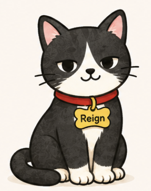
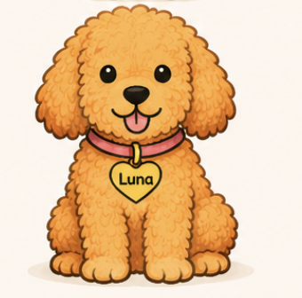
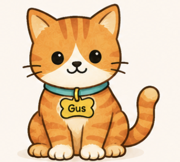

박혜란, Ph.D, BCBA, LBA
학력
- Sungkyunkwan University 아동학/심리학 학사
- University of Kansas 특수교육 석사 및 박사

i:ON Academy ABA에 오신 것을 환영합니다
2세부터 21세까지의 아동 및 청소년을 대상으로 행동, 발달, 그리고 실행기능 등 다양한 행동지원을 제공합니다. 학습과 성장, 그리고 일상이 자연스럽게 연결되는 환경에서 아이들이 자신의 잠재력을 마음껏 펼칠 수 있도록 함께합니다.
서비스 보기i:ON Academy ABA 소개
“i”는 한국어 “아이”를 의미하며, 모든 아이가 있는 그대로 소중하다는 저희의 믿음을 담고 있습니다.
“ON”은 가능성을 켠다는 의미로, 의사소통, 독립성, 자신감, 평생의 성장을 열어가는 과정을 나타냅니다.
저희는 가족과 함께 아이가 자신의 강점을 발견하고 잠재력을 최대한 펼칠 수 있도록 돕습니다.
가능성을 성장으로 이어주는 팀
Meet the i:ON Pals

Reign은 부모님이 이해하기 쉽도록 ABA 개념을 명확하고 쉬운 언어로 설명합니다.

Luna는 배운 개념들이 실제 일상 상황에서 어떻게 활용되는지 보여줍니다.

Gus는 클리닉 소식, 업데이트, ABA를 넘어선 유용한 정보를 전합니다.

서비스
가정, 클리닉, 지역사회에서 의사소통, 행동, 감정 조절, 독립성, 일상생활 기술을 키우는 개별화된 1:1 치료를 제공합니다.
자세히 보기실제 지역사회 환경에서 자신감, 독립성, 기능적 기술을 연습하여 일상생활로 자연스럽게 이어질 수 있도록 지원합니다.
행동, 의사소통, 일상 루틴, 독립성을 지원할 수 있도록 가족에게 실용적인 전략과 코칭을 제공합니다.
자세히 보기자기관리, 위생, 안전, 가정 내 루틴, 지역사회 참여와 같은 일상 기술을 가르쳐 더 큰 독립성을 기를 수 있도록 돕습니다.
초등학교 4–6학년과 고등학생을 대상으로 정리, 계획, 숙제, 시간 관리, 과제 시작, 마무리까지 이어가는 기술을 지원합니다.
자세히 보기강점과 필요를 파악하여 개별 치료 계획과 보험 승인을 위한 방향을 세우는 종합 평가를 제공합니다.
자세히 보기교실 컨설팅, 행동 계획, ARD/IEP 지원, 여러 환경에서의 성공을 돕는 전략을 통해 학교와 협력합니다.
문의하기UCLA PEERS® 프로그램은 만 14–17세 청소년을 위한 사회성 기술 프로그램으로, 역할극, 안내된 연습, 실제 적용을 통해 대화 기술, 친구 관계, 갈등 해결, 사회적 자신감을 가르칩니다.
소식 받기
자주 묻는 질문
저희는 만 2세부터 21세까지의 아동, 청소년, 청년에게 서비스를 제공합니다. 자폐, ADHD, 다운증후군, 실행 기능의 어려움, 발달 지연, 그 외 행동 및 발달 지원이 필요한 아이들을 돕습니다.
모든 아이는 고유합니다. 어떤 서비스가 필요한지는 아이의 강점과 필요를 먼저 이해한 뒤 윤리적으로 판단해야 합니다. 평가는 아이의 현재 능력, 지원이 필요한 영역, 가장 도움이 될 수 있는 지원 방향을 확인하는 데 도움을 줍니다.
의사소통, 사회적 상호작용, 감정 조절, 실행 기능, 일상생활 기술, 독립성, 도전 행동에서 어려움이 있다면 지원이 도움이 될 수 있습니다. 다른 서비스가 더 적합하다면 그 방향으로 안내해 드립니다. 서비스를 시작할지에 대한 최종 결정은 언제나 가족에게 있습니다.
그런 질문을 갖는 것은 매우 자연스러운 일입니다. 응용행동분석(ABA)은 오랜 시간 동안 크게 발전해 왔으며, 오늘날의 윤리적이고 근거 기반의 실천은 존중, 협력, 개별화된 지원, 삶의 질을 높이는 의미 있는 결과를 중요하게 생각합니다.
i:ON Academy에서는 아이들이 의사소통, 독립성, 감정 조절, 사회적 관계, 실행 기능, 일상생활 기술을 키울 수 있도록 돕습니다. 모든 치료 계획은 각 아이의 강점, 필요, 목표에 맞추어 개별화됩니다.
저희는 가족들이 질문하고, 다양한 접근을 살펴보고, 가족의 가치와 가장 잘 맞는 제공자를 선택하시기를 권합니다.
저희는 가정, 클리닉, 지역사회, 그리고 허용되는 경우 학교 등 다양한 환경에서 서비스를 제공합니다. 학교마다 외부 제공자에 대한 정책이 다르기 때문에, 어떤 학교는 직접 중재를 허용하고 어떤 학교는 교실 관찰, 상담, 교사와의 협업만 허용할 수 있습니다.
저희는 자녀의 학교와 협력하여 가장 적절한 지원 수준을 함께 확인할 수 있도록 돕겠습니다.
현재 저희는 Blue Cross Blue Shield와 in-network이며, 보험 파트너십을 계속 확장하고 있습니다. 또한 Aetna와 Cigna에도 credentialed 되어 있으나, 현재 해당 보험으로는 신규 클라이언트를 받고 있지 않습니다. Aetna 또는 Cigna 보험을 가지고 계신 경우 현재 가능 여부를 문의해 주세요.
private pay 서비스도 제공하며, 보험 플랜에 따라 out-of-network 혜택을 활용할 수 있는 경우도 있습니다. 보장 내용을 잘 모르시는 경우 저희 팀이 혜택을 확인하고 가능한 선택지를 안내해 드릴 수 있습니다.
보장 및 결제 옵션에 대한 가장 최신 정보는 welcome@ionaba.com으로 문의해 주세요.
Focus Lab은 초등학교 4–6학년 학생과 고등학생을 위한 대면 실행 기능 프로그램입니다. 정리, 계획, 숙제, 시간 관리, 독립성을 지원합니다. 참여를 위해 공식 진단이 반드시 필요하지는 않습니다.
자세한 문의는 academy@ionaba.com으로 이메일해 주세요.
PEERS®는 만 14–17세 청소년을 위한 근거 기반 사회성 기술 프로그램입니다. 참여자는 구어로 의사소통할 수 있고 일반교육 또는 유사한 그룹 학습 환경에 성공적으로 참여할 수 있어야 합니다. private pay 등록에는 공식 진단이 필요하지 않을 수 있으나, 보험 적용을 위해서는 필요할 수 있습니다.
자세한 문의는 academy@ionaba.com으로 이메일해 주세요.
네. 다운증후군 아동을 위한 개별화된 지원을 제공하며, 의사소통, 독립성, 사회성 발달, 실행 기능, 일상생활 기술에 초점을 둡니다. 자녀의 물리치료사와의 협업을 적극 권장합니다.
Focus Lab ADHD Program, 다운증후군 지원, PEERS® Social Skills Groups의 현재 가능 여부와 등록 정보는 문의해 주세요.
자세한 문의는 academy@ionaba.com으로 이메일해 주세요.
시작은 간단합니다. 먼저 30분 상담 신청서를 작성해 주세요 . 상담을 통해 자녀의 강점, 필요, 목표를 함께 알아봅니다. 서로 잘 맞는다고 판단되면, 필요한 경우 보험 승인 절차를 시작하면서 종합 평가를 진행합니다.
평가와 승인 절차가 완료되면 자녀의 필요에 맞춘 개별 치료 계획을 만들고 서비스를 예약합니다. 저희 팀이 모든 단계에서 안내하고 질문에 답해 드리겠습니다.
부모님은 치료 팀의 핵심 구성원입니다. 저희는 가족이 보호자 코칭 세션에 참여하고, 방문 사이에 전략을 연습하며, 치료 팀과 정기적으로 소통하고, 성공과 우려를 함께 나누는 것을 권장합니다.
가족의 참여는 아이가 가정, 학교, 지역사회에서 의미 있고 지속적인 진전을 만들어 가는 데 매우 중요한 역할을 합니다.
네. 부모님과 보호자가 세션을 관찰하고, 보호자 코칭에 참여하며, 일상 루틴에서 사용할 수 있는 전략을 배우는 것을 권장합니다. 가족의 참여는 아이가 여러 환경에서 새로운 기술을 만들고 유지하는 데 중요한 역할을 합니다.
적절한 경우 가능합니다. 형제자매는 의사소통, 놀이, 사회적 상호작용, 기술의 일반화를 돕는 활동에 함께 참여할 수 있습니다. 형제자매의 참여는 아이가 일상적인 가족 생활 속에서 새로운 기술을 더 자연스럽게 연습하는 데 도움이 될 수 있습니다.
저희가 도와드리겠습니다. 서비스를 알아보고 계시거나, 여러 제공자를 비교하고 계시거나, i:ON Academy가 가족에게 맞는지 궁금하시다면 편하게 이야기해 주세요.
무료 상담을 예약하고 자녀와 가족을 어떻게 지원할 수 있는지 알아보세요.
자료
아래의 파일들을 눌러서 보세요
Dedication. Empathy. Passion. Let us invest in you!
윤리의식을 바탕으로, 아이들을 진심으로 사랑하며, 인내심과 창의성을 갖추고, 응용행동분석(ABA) 전문가로 성장하고 싶은 RBT(Registered Behavior Technician®) 및 Behavior Technician을 기다립니다.
모든 팀원이 체계적인 교육과 지속적인 임상 지도, 정기적인 피드백, 그리고 배려와 존중, 협력을 소중히 여기는 근무 환경 속에서 함께 성장합니다.
또한 BCBA의 담당 사례 수를 의도적으로 적게 유지하여, 각 Behavior Technician이 충분한 슈퍼비전과 실질적인 코칭, 그리고 즉각적인 임상 지원을 받을 수 있도록 운영합니다. 이는 아이들에게 더 나은 서비스를 제공하기 위한 중요한 약속입니다.
가능성을 켜는 첫걸음, 이제 당신의 가능성부터 시작해 보세요.